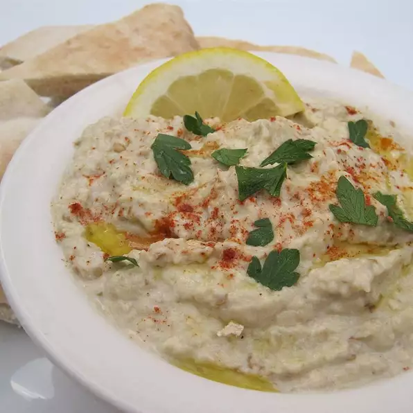

Baba Ghanoush

Description
A roasted eggplant spread or dip that pairs well with pita bread or vegetables. It works great as a appetizer or side dish by it's self or along side hummis.
Ingreditents
- 1 eggplant
- 1/4 cup lemon juice
- 1/4 tahini
- 2 tablespoons sesame seeds
- 2 cloves of garlic, minced
- salt and pepper to taste
- 1-1/2 tablespoons olive oil
Steps
- Preheat ove to 400 degrees F (200 degrees C).
- Lightly grease a baking sheet.
- Place eggplant on baking sheet and make holes in in skin with fork.
- Put in oven and roast it for 30 to 40 minutes, turning occasionally, until soft.
- Remove from oven and place in a into a large bowl of cold water.
- Remove from bowl and peel skin.
- Place eggplant, lemon juice, tahini, sesame seeds, and garlic in an electric blender, and puree.
- Season with salt and pepper to taste.
- Transfer eggplant mixture to a medium size mixing bowl, and slowly mix in olive oil.
- Refrigerate for 3 hours before serving.